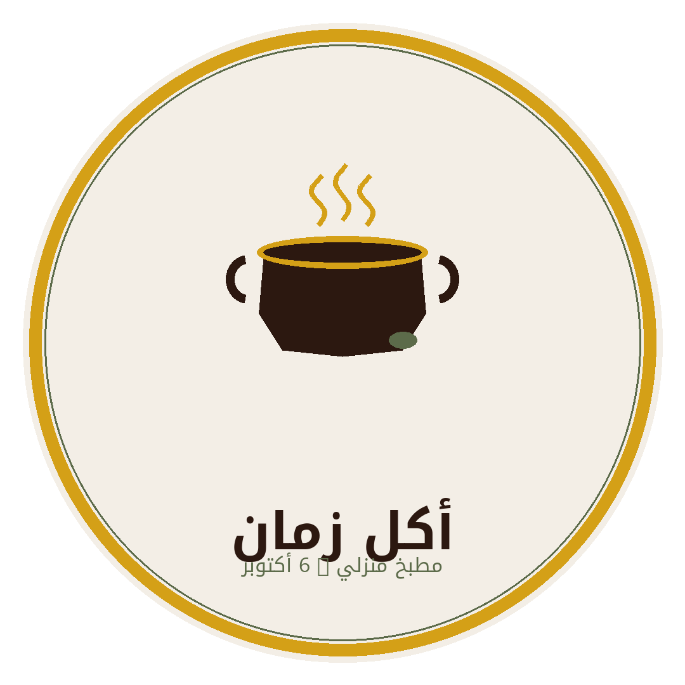
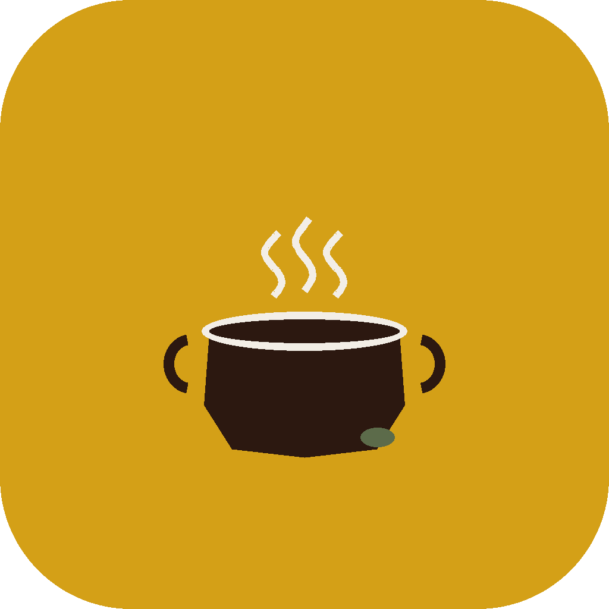
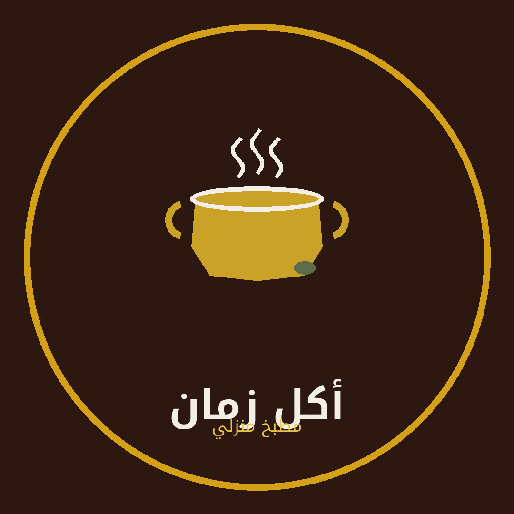
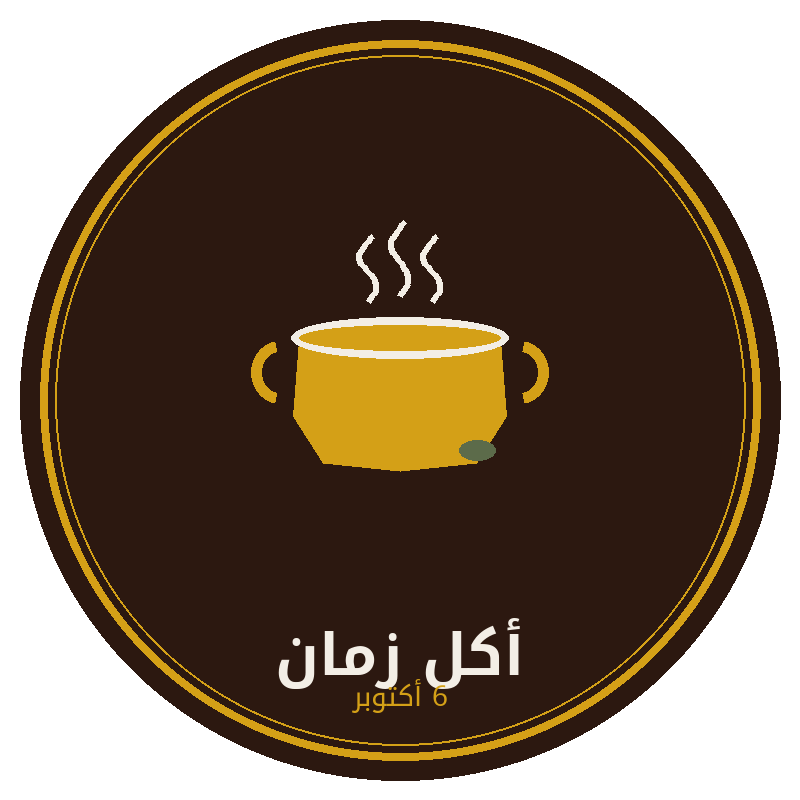
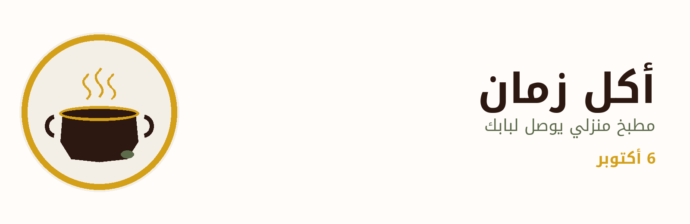
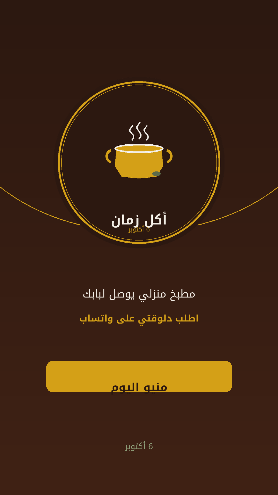
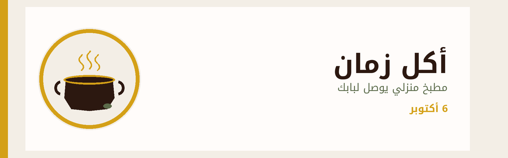
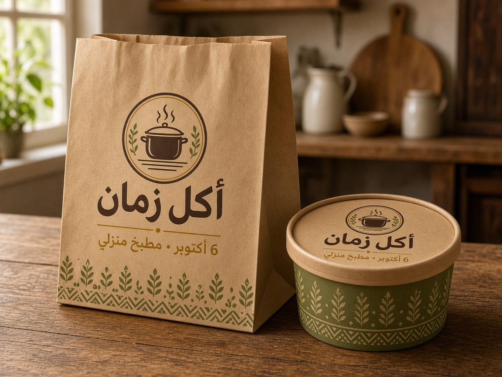
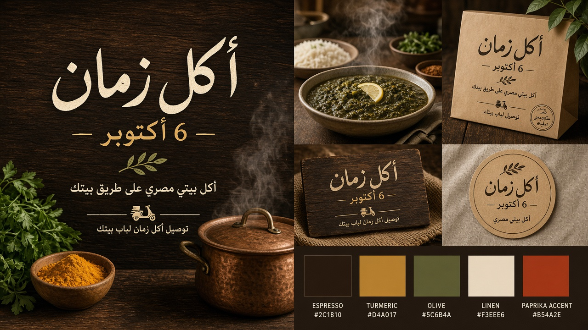

مطبخ منزلي يوصل لبابك
6 أكتوبر
دفء المطبخ المصري: إسبريسو، كركم، وزيتون.
قدر + بخار = أكل بيتي طازة. استخدم النسخة المناسبة لكل سطح.




عامية مصرية خفيفة… زي كلام البيت.
ستوري، هيدر منيو، ومزاج البراند.



